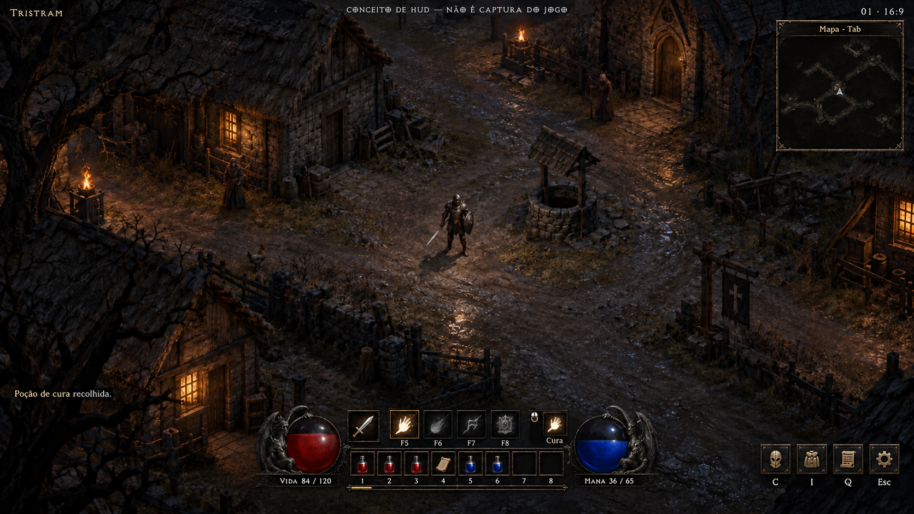
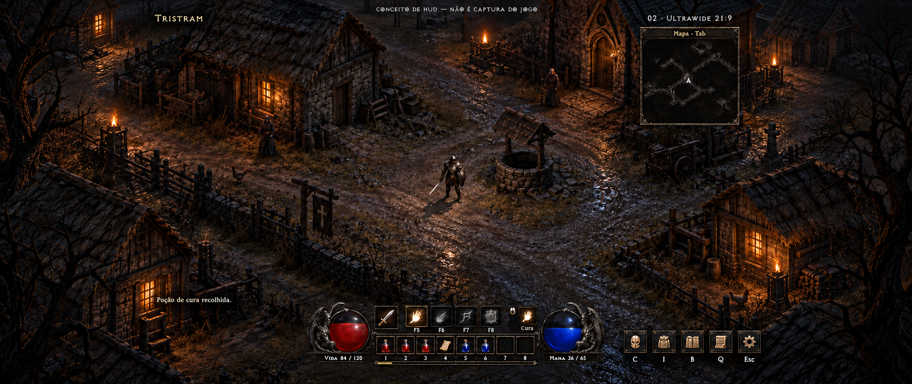
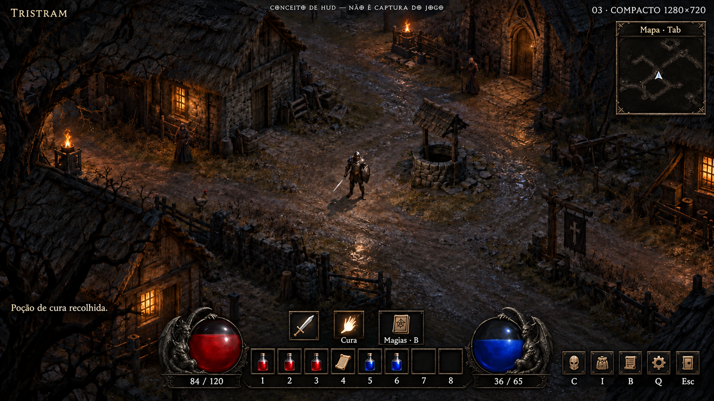
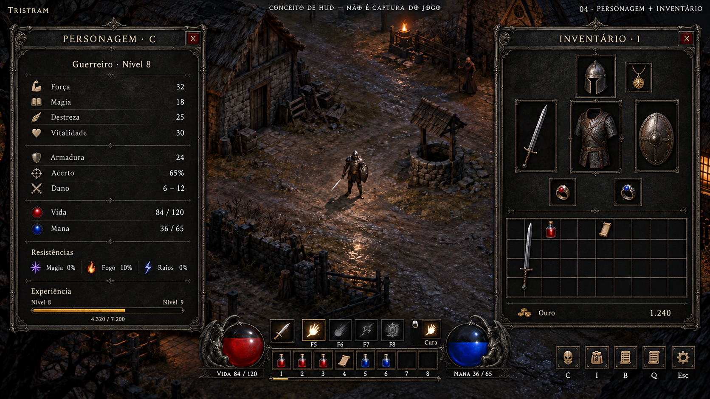

ESTADO NO JOGO
CRITÉRIOS E LIMITES
Orbes clássicos, cinto de oito posições e controles próximos do centro. Os cenários abaixo são ilustrações geradas; não são capturas nem assets aprovados do jogo.

01 · Jogo em 16:9Núcleo compacto; Cura ativa em Tristram.
02 · UltrawideControles centrais; mais mundo nas laterais.
03 · Viewport menorOito posições visíveis; favoritos recolhidos.
04 · Personagem + inventárioSete locais de equipamento; mochila 10 × 4.O catálogo oferece composições individuais com texto e grades determinísticos, apoiadas pela arte gerada. A disponibilidade se refere ao código auditado; a apresentação é proposta.